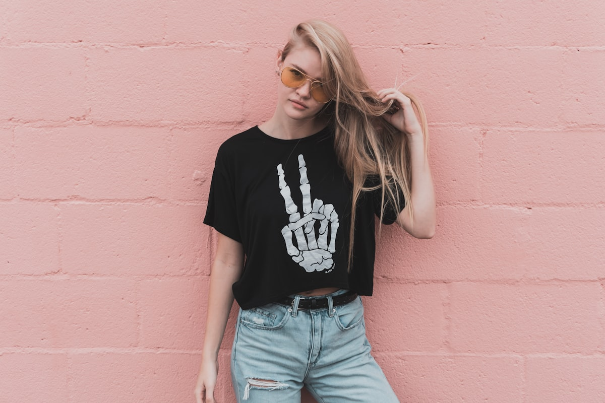
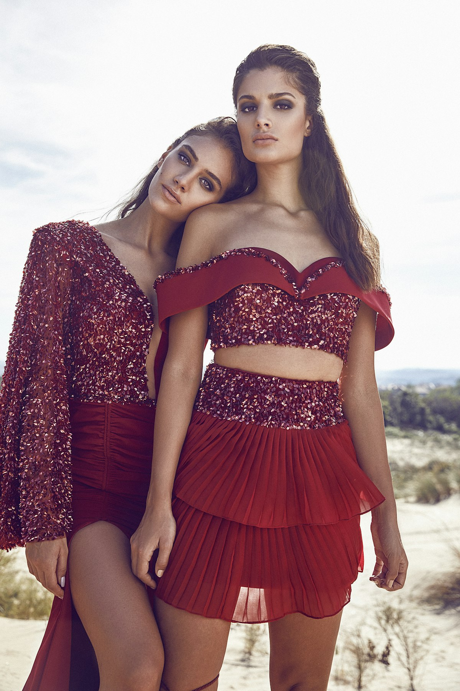
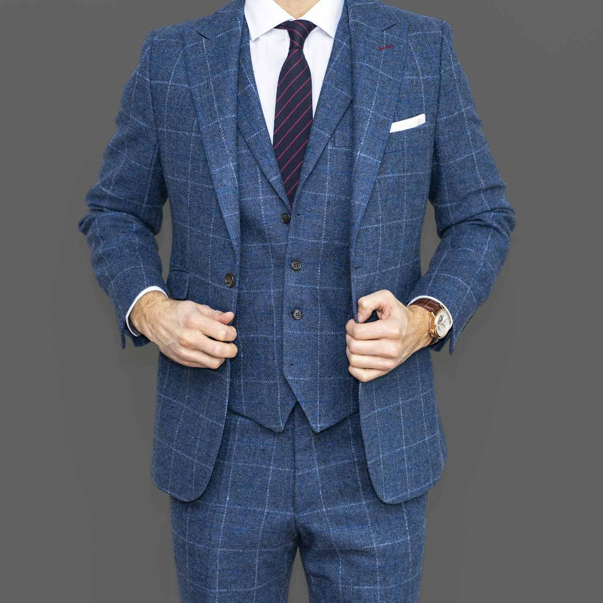
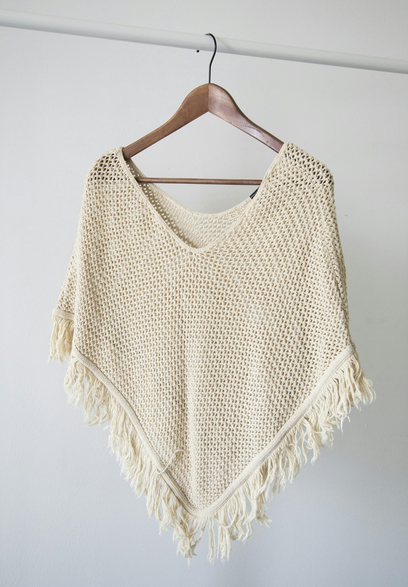
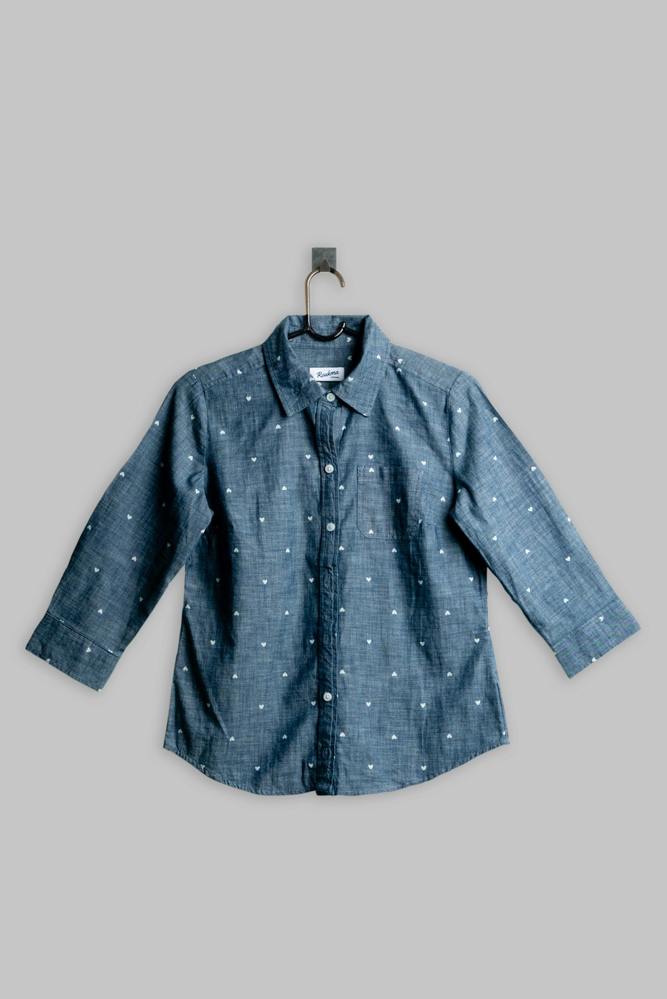
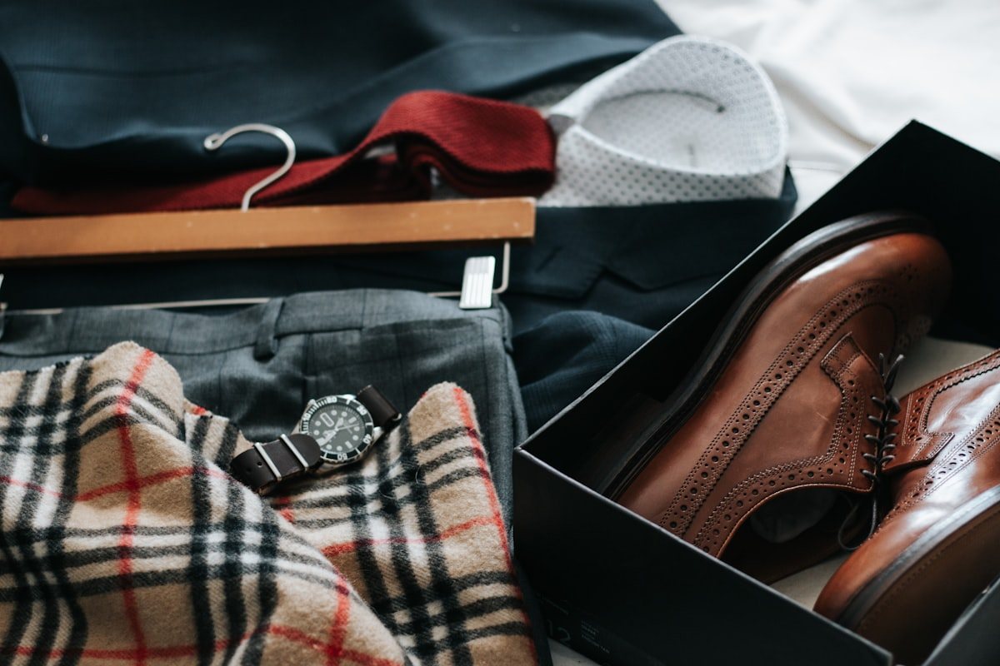

The Master Art of Silk Velvet & Bespoke Silhouette Architecture
Welcome to VelvetGarbQuay, an artisanal fashion house where heritage textile weaving meets modern architectural tailoring. We craft bespoke evening gowns, structural velvet blazers, and timeless wardrobe investments designed to endure across generations with peerless grace.
Every garment begins with thirty-two precise anatomical measurements, sculpted onto free-floating horsehair canvas without synthetic glues or industrial shortcuts. We celebrate the tactile majesty of pure organic Mulberry silk, hand-pad-stitched lapels, and the quiet dignity of slow couture.

The Micro-Architecture of Pure Silk Velvet
Understanding the complex double-cloth weaving mechanisms, warp pile density, and anisotropic light refraction that define true luxury velvet.

Double-Cloth Wire Weaving
True couture velvet is woven as two interconnected fabric sheets separated by an upright supplemental warp pile. A precision reciprocating blade slices between the two layers simultaneously, creating two identical mirror lengths of dense, plush velvet with over 450 tufts per square centimeter. This mechanical complexity ensures that the upright fibers never shed or flatten under standard wearing friction.
The ground backing is woven from fine long-staple organic cotton or filament silk in an ultra-tight plain or twill weave. This dense backing provides structural stability and tensile strength, preventing the fabric from bagging or stretching out of shape over years of formal wear.

Anisotropic Light Absorption
Unlike flat satin or twill weaves that reflect specular light uniformly, upright velvet filaments trap ambient illumination within microscopic inter-fiber recesses. As the garment moves in motion, directional pile orientation shifts specular highlight into deep velvet shadow, creating luminous optical depth.
When illuminated by warm evening candlelight or modern architectural spotlights, the fabric exhibits a breathtaking dual-tone chromatic effect. Looking with the nap produces an antique golden sheen; looking against the nap reveals an abyss of deep, saturated color that flatters every complexion.

Single-Direction Nap Cutting
Precision velvet cutting requires that every single pattern piece be drafted and aligned in a strict downward nap direction. This guarantees tonal uniformity across all garment panels, preventing mismatched panel shades under direct evening chandelier and ballroom illumination.
Our master cutters inspect each continuous bolt under multiple color-temperature light sources before making a single cut. Using weighted brass shears and specialized velvet cutting boards with fine micro-grippers, we ensure that the delicate pile is never crushed during pattern extraction.
Bespoke Eveningwear & Tailored Silhouettes
Each piece in our signature repertoire represents over 60 hours of pattern drafting, horsehair canvas basting, and hand-finished couture assembly.
The Sovereign Evening Gown
Sculpted bodice with interior boned silk corset and bias-cut flowing velvet skirt that pools organically into a 40cm sweep train. Engineered to balance dramatic presence with weightless comfort throughout lengthy gala evenings.
The interior structure utilizes spiral steel boning wrapped in plush silk velvet casing, preventing any direct pressure against the ribcage while maintaining a statuesque posture.

The Mayfair Dinner Blazer
Floating horsehair chest canvas, hand-shaped roped sleeveheads, and silk grosgrain peaked lapels designed for black-tie galas. Featuring hand-sewn milanese buttonholes and functional surgeon cuffs.
Constructed with dual side vents and interior pockets tailored specifically for fine writing instruments, event invitations, and smartphone devices without disrupting exterior silhouette lines.
The Saint-Honoré Overcoat
Double-breasted tailored trench combining heavy English wool with velvet storm flaps, deep storm pockets, and horn buckle belt. Designed to provide imposing architectural elegance in cold autumn weather.
Features a detachable velvet throat latch, inverted back pleat with hidden button closure, and a full lining in breathable Bemberg cupro twill that glides effortlessly over evening suits.

The Venetian Opera Cape
Dramatic full-circle velvet cape lined with fluid golden silk satin, featuring hand-braided frog clasps and a structured high collar. Cascades gracefully over formal gowns and tailored tuxedos.
Weighted along the bottom hem with fine interior cotton chain weighting, ensuring that the cape maintains its majestic vertical drape even in brisk outdoor breezes.
Anatomy of the Floating Canvas & Bias Drape
Unlike fast fashion garments that rely on stiff synthetic fusibles glued under industrial heat presses, our bespoke garments are structured entirely with floating natural canvas. This allows the fabric to breathe, mold to your anatomical curves over time, and retain its sculptural roll indefinitely.
By eliminating chemical adhesives, our tailoring artisans preserve the natural flexibility and crimp memory of the wool and silk fibers. When you sit, stand, or gesture, the internal layers slide smoothly over one another, ensuring that the jacket collar never gaps away from the neck or bunches across the chest.
Pad-Stitched Horsehair Chest Canvas
Natural Mongolian horsehair canvas is hand-pad-stitched with over 1,200 micro-stitches, creating a gentle three-dimensional chest roll that moves harmoniously with your chest expansion and posture.
True 45° Bias Cut Fluidity
By rotating pattern panels precisely 45 degrees across the grainline, the woven fabric naturally yields along the diagonal warp and weft intersections, hugging biological curves with liquid grace without synthetic elastane.
Hand-Tacked Silk Sleeveheads & Spreader
Armholes are shaped by hand with pure silk sleevehead roll batting, ensuring complete freedom of movement without pulling the blazer collar away from your neck when gesturing or seated.

Garment Silhouette & Yardage Estimator
Calculate continuous fabric bolt requirements, master hand-basting hours, and interior lining architecture for your upcoming bespoke commission.
Bespoke Commission Specifications
- Required Fabric Yardage: 4.5 meters continuous bolt
- Hand-Basting & Canvas Time: 38 hours master artisan basting
- Interior Architecture & Lining: 100% Habotai Mulberry Silk (45g/m²) full bias lining
- Artisanal Edge & Seam Finish: French seams with hand-rolled silk hem stitching
- Atelier Fitting Protocol: 3 Muslin toiles + 2 Velvet drape fittings
- Estimated Creation Timeline: 4 to 6 weeks from pattern drafting
The 5-Stage Bespoke Commission Journey
From initial anatomical measurements to hand-rolled silk hem finishing, experience the true reverence of haute couture craftsmanship.
Anatomical Consultation
We record 32 anatomical measurements, analyzing posture, shoulder slope, spinal curvature, and movement biomechanics to draft your individual paper block from scratch.
Muslin Toile Fitting
A prototype garment is sculpted in unbleached cotton muslin (toile), pinned and marked directly on your physique to refine pitch, balance, waist suppression, and volume.
Skeleton Canvas Basting
The chosen silk velvet is hand-cut, basted to the floating horsehair canvas with white silk threads, and fitted for collar roll, lapel proportions, and sleeve pitch.
Silk Lining Setting
Habotai silk lining is hand-sewn into interior seams with pick-stitching, allowing independent movement between the outer velvet shell and interior lining.
Artisanal Pressing
Garments receive needle-board steam pressing, protecting upright pile tufts, followed by hand-sewn horn buttons and final salon inspection before delivery.
Sustainable Fibers, Natural Dyes & Zero-Waste Patterning
In an era of disposable fashion and synthetic petroleum blends, VelvetGarbQuay champions radical fiber purity. True luxury must never compromise ecological vitality or human dignity.
We source raw fibers exclusively from farms practicing regenerative agriculture. Our organic Mulberry silk is farmed without synthetic pesticides, while our British wools are sourced from heritage sheep flocks that graze on native pastures in Scotland and Yorkshire.
100% GOTS-Certified Organic Silks & Wools
We source exclusively from heritage European mills adhering to closed-loop water purification, pesticide-free mulberry groves, and ethical shearing standards.
Botanical & Low-Impact Mineral Colorants
Our deep burgundies, rich indigos, and champagne ochres are dyed using non-toxic madder root, logwood extract, and iron fixatives that cause zero aquatic toxicity.
Zero-Waste Cutting Tessellation
Atelier pattern cutting layouts are mathematically mapped to minimize remnant scraps. Remaining velvet trimmings are converted into luxury pocket squares, ties, and silk corsage accents.
The 4-Pillar Capsule Wardrobe Matrix
Four foundational tailored pieces that interchange seamlessly to create over 24 distinct evening, gallery, gala, and daytime styling arrangements.

Pillar I: The Midnight Blazer
Tailored velvet blazer with structured shoulders that elevates tailored denim for dinner or pairs with silk trousers for formal gala receptions. Provides sharp authority and tactile luxury.

Pillar II: The Structured Coat
Heavyweight camel wool coat with velvet collar accents, providing warmth and clean architectural lines over formal eveningwear or casual daytime knitwear.

Pillar III: The Silk Column Separate
High-waisted bias-cut velvet skirt or tailored wide-leg trousers that drape with liquid ease and transition effortlessly from day to night across seasonal events.

Pillar IV: The Draped Capelet
Removable velvet shoulder capelet that adds dramatic warmth over evening dresses or functions as an avant-garde collar over tailored outerwear.
The Art of Velvet & Silk Care Protocols
Proper textile stewardship ensures your bespoke garments retain their pile luster, structural canvas roll, and tensile strength for decades.
Steam Inversion Protocol
Never apply a hot direct flat iron to velvet pile. Always use vertical steam from a 15cm distance or hang garments in a moisture-rich room, allowing steam to relax fiber tension and naturally revive flattened pile tufts.
Steaming from the interior lining side allows heat to push pile tufts outward safely without surface friction.
Natural Horsehair Brushing
After each wear, brush the garment gently in the direction of the natural nap using a soft natural horsehair clothes brush. This removes airborne microscopic particles and lifts crushed pile fibers.
Natural bristles prevent static electricity buildup and maintain natural fiber luster without chemical sprays.
Cedar & Breathable Cotton Storage
Store garments on wide-contoured wooden hangers inside breathable 100% unbleached cotton garment bags. Never use non-breathable plastic wraps, and maintain cedar blocks for organic moth deterrence.
Allows natural animal fibers and silk filaments to breathe freely without drying out or trapping moisture.
Words from Our Bespoke Patrons
Reflections from patrons who appreciate the incomparable poise and enduring grace of our bespoke couture garments.
"The Sovereign Evening Gown crafted for the Paris Opera Gala was breathtaking. The velvet draped like liquid obsidian, and the interior silk corset allowed me to move with effortless elegance throughout the entire evening."
Éléonore de Montmorency
Patron & Arts Benefactor, Paris"Having tailored suits from London to Milan for three decades, VelvetGarbQuay's floating horsehair canvas and velvet dinner jacket is without question the most impeccable garment in my wardrobe. The shoulder pitch is flawless."
Sir Alistair Sterling
Architectural Director, London"The bespoke trench coat with velvet collar detailing has become my signature outerwear across New York and Geneva. It looks even more magnificent with age, proving the value of sustainable bespoke luxury."
Dr. Claire Vane
Cultural Historian, New YorkFrequently Asked Bespoke Questions
Everything you need to know about bespoke commissioning timelines, fitting procedures, fabric sourcing, and international consultations.
Pure silk velvet is constructed with an organic silk warp pile and fine cotton or silk base cloth. It features a natural, liquid drape, breathable thermal regulation, and a subtle luminous sheen that absorbs light organically. In contrast, synthetic polyester velvets have a stiff plastic-like drape, generate static electricity, trap body heat, and exhibit a harsh synthetic glare under evening lighting.
A bespoke commission typically requires three to four in-person fittings. The first fitting utilizes a cotton muslin toile to adjust overall silhouette balance. The second fitting evaluates the skeleton garment basted with horsehair canvas. The third fitting confirms sleeve drape, button placement, and hem sweep. Final minor adjustments are completed before your garment is delivered.
Our standard creation timeline is four to six weeks from initial pattern drafting. Because every component—including canvas pad-stitching, pocket welts, lapel pick-stitching, and silk buttonholes—is completed entirely by master artisans by hand, this timeframe guarantees uncompromised structural integrity and couture refinement.
Yes. Our master tailors conduct trunk show salon tours three times annually in New York, Zurich, Tokyo, and Dubai. International patrons may schedule private hotel suite fittings or request our traveling concierge service for bespoke commissions.
The Precision Geometry of Muslin Toile Sculpting
Why drafting a bespoke pattern is an irreplaceable three-dimensional anatomical dialogue between the master cutter and the living human physique.
Anatomical Pitch Calibration
Every human torso carries a unique natural rotational pitch. Standard ready-to-wear grading assumes a static upright cylinder, causing horizontal wrinkles across the lower back and pulling at the lapel neck junction. Our master cutters calibrate the balance line between the front neck point and posterior cervical vertebra, eliminating neck roll distortion permanently.
Unbleached Muslin Toile Prototyping
Before our shears ever touch rare silk velvet, we sculpt a full garment prototype in natural, unbleached cotton muslin. During the toile fitting, we slash, pin, and mark directly onto the fabric, sculpting waist suppression, armhole depth, and shoulder slope to mirror your exact anatomical silhouette with millimeter accuracy.
Individual Paper Block Archiving
Once the muslin toile is refined, the altered pieces are dismantled and transferred onto heavy archival kraft paper. This creates your permanent, proprietary bespoke pattern block, preserved in our climate-controlled vault in Paris for all future wardrobe commissions and seasonal alterations.
The Language of Haute Couture Craftsmanship
Master the essential terminology of historical textile weaving, bespoke internal architecture, and classical sartorial finishes.
Pad-Stitching (Piqué)
A rhythmic hand-sewing technique that joins horsehair canvas to cloth with tiny, staggered diagonal stitches, permanently molding a curved chest roll into the jacket front.
Milanese Buttonhole
A raised, structural buttonhole hand-sewn around a silk gimp core with high-twist silk buttonhole twist, taking forty-five minutes of concentrated artisan handwork per hole.
Grosgrain Lapel Facing
A heavy, ribbed silk facing applied to dinner jacket peaked lapels, creating subtle tactile contrast against the plush, light-absorbing background of the velvet shell.
Hong Kong Seam Finish
An artisanal interior finishing method where raw seam allowances are individually bound in ultra-fine pure silk organza ribbon, preventing fraying while eliminating bulk.